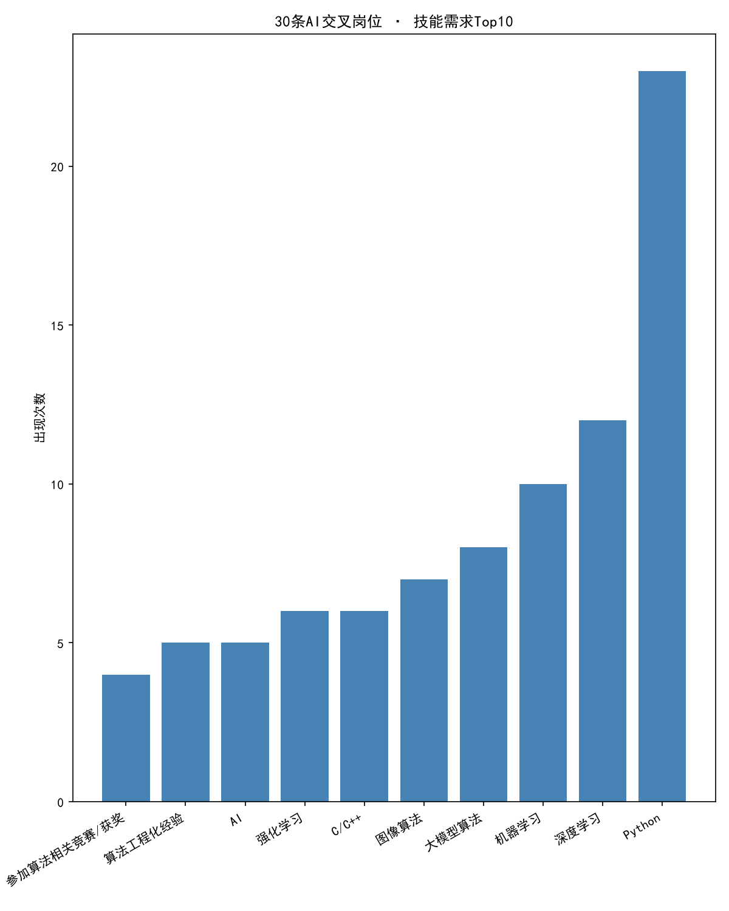
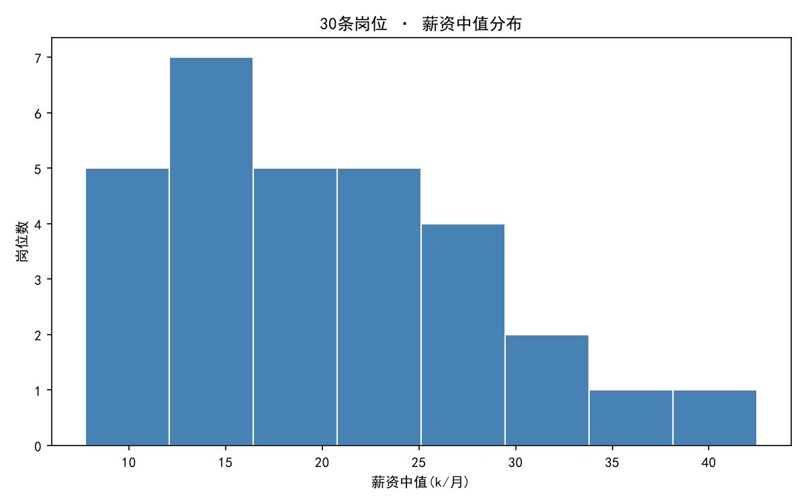

AI 交叉岗位情报站 · 数据报告
样本：30 条 AI/工业交叉岗位 JD · 来源：BOSS直聘 · 城市：广州/深圳 · 采集周期：2026-09-17 至 09-19
一、数据概览
二、技能需求 Top10（全项目核心情报）

| 排名 | 技能 | 出现次数 | 占30条比例 |
|---|
| 1 | Python | 23 | 77% |
| 2 | 深度学习 | 12 | 40% |
| 3 | 机器学习 | 10 | 33% |
| 4 | 大模型算法 | 8 | 27% |
| 5 | 图像算法 | 7 | 23% |
| 6 | C/C++ | 6 | 20% |
| 7 | 强化学习 | 6 | 20% |
| 8 | AI | 5 | 17% |
| 9 | 算法工程化经验 | 5 | 17% |
| 10 | 算法竞赛/获奖 | 4 | 13% |
三、薪资分布

薪资中值 = (薪资下限 + 薪资上限) / 2。主峰位于 13-16k 区间（12 条），右偏长尾至 40k+，30k 以上仅 2 条。
四、基础统计
| 维度 | 分布 |
|---|
| 城市 | 深圳 18 · 广州 12 |
| 经验要求 | 不限 23 · 应届 3 · 3-5年 2 · 1-3年 1 · 5年以上 1 |
| 学历要求（归一化后） | 本科 21 · 硕士及以上 5 · 硕士在读 4 |
学历归一化说明：原表存在"在读研究生 / 在校应届硕士 / 本科硕士在读 / 在读硕士及以上"4种口语化写法，各1条，统一归为"硕士在读"；序号28按JD原文修正为本科。
五、方法论：这条数据链路怎么跑通的
手工采集 30 条 JD（Excel）→ openpyxl 读写收集表 → JD 原文投喂 DeepSeek API，提示词内嵌 JSON 格式模板做结构化提取 → json.loads 将回信文本转为 Python 字典 → 技能关键词回填 Excel → pandas 统计（value_counts / mean / Counter 词频，含分隔符清洗）→ matplotlib 出图（SimHei 中文字体配置）→ 本报告。
踩坑记录（面试素材）：JD提取的"蒙对代码"病灶（对拼接字符串逐字符循环）、matplotlib 中文方框（SimHei + unicode_minus 双配置）、bar 竖向图中文标签遮挡（rotation + ha + subplots_adjust 三连解）。
六、我的判断（待 Roy 亲笔填写）
判断一：技能榜对我的含义。
对照 Top10，我机械专硕现有的第一个是硕士学历能够面试大多数岗位，其次我在岗位筛选填写时找的几乎都是跟python，因为我知道我未来的编程主要为python，且我有基础，况且我对机械结构、产品有一定的理解，只是由于受不了那种工作环境，所以换为有空调办公位的岗位，因此选择了这个导师。最后由于我极度缺乏落地项目实验，如深度学习，我知道这个肯定是拿高薪的关键，对于研一研二我还没有明确的目标，但我会往AI交叉岗位所需要的技能上一个个去训练。
判断二：薪资数据 vs 我的预期。
薪资来说比较一般，因为在我们实验室，我研三师兄说少于20w一年都不要，我认为凭借我的努力，我是可以在两年学习一年实习后做到24w一年甚至更高。
判断三：下一步动作。
基于这30条数据根本没法选，我查阅的岗位还是太少了，我也不清楚岗位未来的发展趋势，但会是AI交叉岗位，因为算法薪资高，但是我学历只是广工机械专硕，所以只能用全面写来代替某一方向的顶尖精通，这样才能减轻我的劣势。在我不清楚怎么选择之前，我会选择一个可以走向大多数岗位所需要的技能，然后再选择真正岗位时，去具体化那个岗位所需技能然后精通他们。